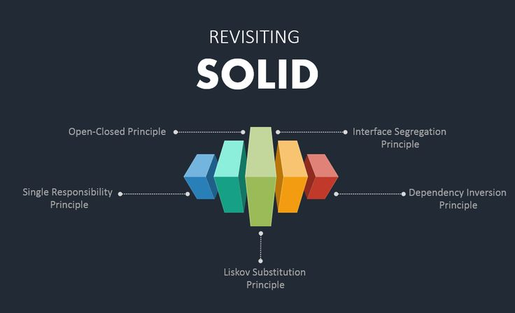

SOLID - абревіатура, що позначає перші 5 принципів об'єктно-орієнтованогопрограмування, сформульованих Робертом Мартіном.

Дотримуючись цих принципів, розробники можуть досягти модульності, повторного використання коду, гнучкості та зменшення складності коду.
- Принцип єдиного обов’язку (Single Responsibility Principle)
- Принцип відкритості/закритості (Open/Close Principle)
- Принцип підстановки Лісков (Liskov Substitution Principle)
- Принцип розділення інтерфейсу (Interface Segregation Principle)
- Принцип інверсії залежностей (Dependency Inversion Principle)